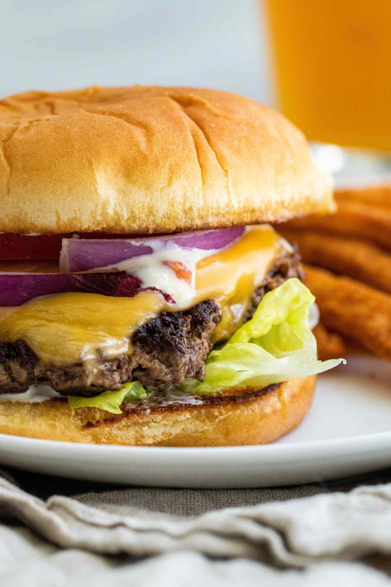

Smash Burgers

A Juicy Burger with Crispy Edges!
Enjoy a juicy, cripsy burger that only takes 20 minutes to make.
Ingredients
- 4 hamburger buns
- 2 tablespoons butter
- 1 pound ground chuck beef
- 4 6-inch squares of parchment paper
- salt to taste
- 4 slices American cheese
- burger toppings of your choice
Steps
- Preheat outdoor grill to high heat. Set a cast iron flat-top griddle onto the grill.
- Spread butter on inside of buns and toast on flat-top.
- Form meat into 8 loosely-packed balls each weighing 2 ounces. Cover with a piece of parchment paper and place on flat-top. Smash down on the burger to form a patty!
- Grill burger for 45 seconds on one side. Then, flip burger, add American cheese, and grill for 20 seconds.
- Enjoy!